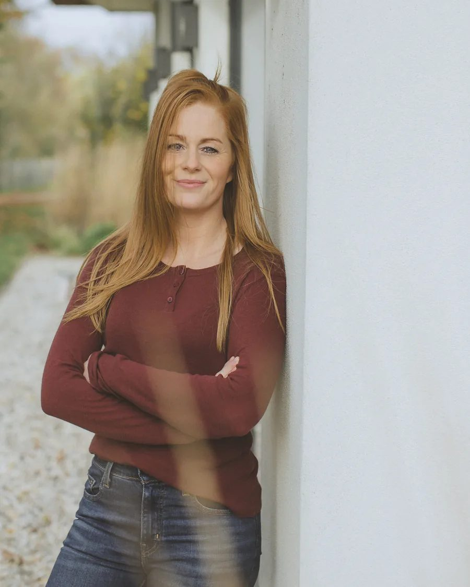
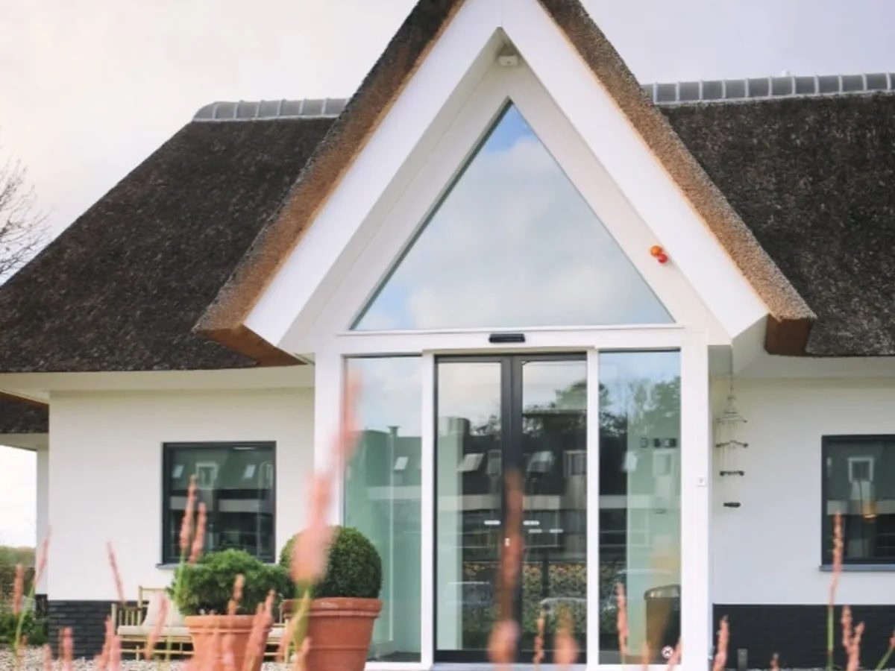

Backpack
Backpack★★★★★
Ik heb een sessie gehad bij Maaike en het heeft me veel nieuwe inzichten gegeven. Supergaaf om dit te mogen ervaren — ik ben enorm dankbaar voor Maaike's talent en begeleiding.
HelenaRegressietherapieUnpack · met Maaike Oosterveer
Voorouderlijk werk, regressie- en reïncarnatietherapie. In een veilige setting verwerk je wat toen niet gevoeld kon worden. Praktijk in Voorschoten.
Deze therapie is een vorm van verwerkingstherapie. Alles wordt geweten in het onderbewuste, waar je door de juiste vragen te stellen contact mee kunt maken. Zowel met innerlijk kindstukken als met familie- en voorouderlijnen of eigen voorgaande levens.
Deze vorm van therapie geeft je de mogelijkheid om in een veilige setting en onder begeleiding te doorvoelen wat toen niet gevoeld kon worden of is vastgezet.
Bij het verwerken van onverwerkte verhalen kunnen er beelden ontstaan of ervaringen worden beleefd die niet altijd letterlijk kloppen. Je eigen perceptie — wat je ziet, voelt en lichamelijk ervaart — mengt zich met herinneringen uit het verleden en vormt het verhaal.
Wat klopt, is de emotionele lading: een bevroren emotie die eindelijk ruimte krijgt om gevoeld en verwerkt te worden. Daarom is voor de verwerking de emotionele waarheid belangrijker dan de feitelijke details. De rode draad is betrouwbaar, ook wanneer de beelden deels symbolisch zijn.
Ik werk met trance, oftewel aandachtsconcentratie: het bewustzijn van nu, gericht op het onderbewuste. Ik maak dus geen gebruik van hypnose. Tijdens de sessie blijf je bewust en wilsbekwaam. Je kunt het vergelijken met het lezen van een goed boek of het kijken van een film: je bent afgestemd op het verhaal, maar je kunt gewoon besluiten om even naar de wc te gaan.


Op mijn locatie kun je na een sessie naar de sauna, zwemmen, een massage boeken, een wandeling maken in de natuur, iets eten of drinken, of een ijsje halen op de natuurboerderij waar verschillende dieren lopen.
Mijn hond Mystic is aanwezig in de praktijk. Het is helaas niet mogelijk om je eigen hond mee te nemen.
Praktisch
Sessies vinden fysiek in de praktijk plaats.
Veurseweg 182
2252 AG Voorschoten
| Intake (180 min) | €299 |
| Vervolgsessie (150 min) | €249 |
Inclusief btw. De sessies worden niet vergoed door de zorgverzekeraar.
I hope you fall in love with being alive
Reviews
Ik heb een sessie gehad bij Maaike en het heeft me veel nieuwe inzichten gegeven. Supergaaf om dit te mogen ervaren — ik ben enorm dankbaar voor Maaike's talent en begeleiding.
HelenaRegressietherapieMaaike nam al mijn angsten van tevoren weg en heeft me heel goed begeleid de hele sessie door. Ik voelde me rustig en vertrouwd. Ook de nazorg was fijn, ze denkt echt met je mee.
AylaRegressietherapieBij Maaike voel je je meteen op je gemak en ze weet goed door te vragen. Nu een dag later voel ik me een stuk vrijer, lichter en vooral vol liefde en leven.
MandyRegressietherapieTwintig minuten, vrijblijvend en gratis. Je ontdekt of onze aanpak bij je past — en wij of we je verder kunnen helpen.
Plan gratis kennismaking →Weet je al bij wie je wilt zijn? Boek direct bij Clementine of bij Maaike.